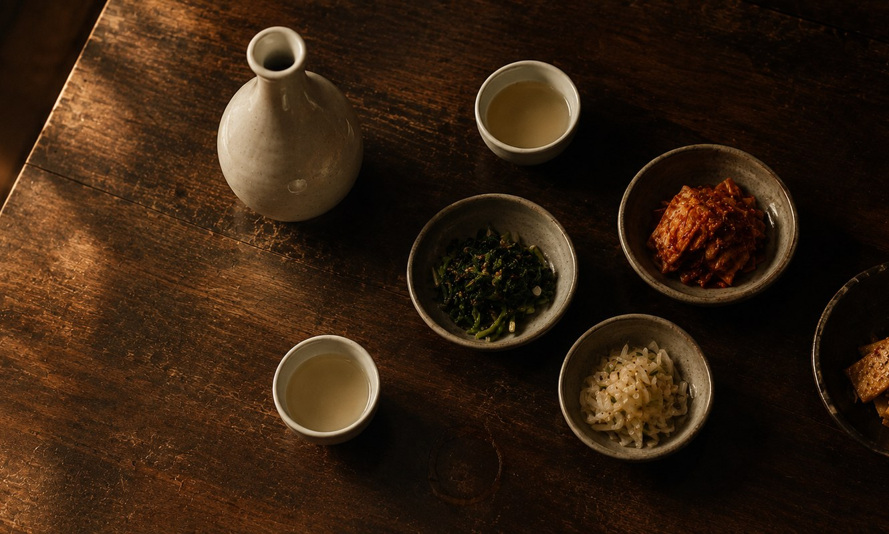
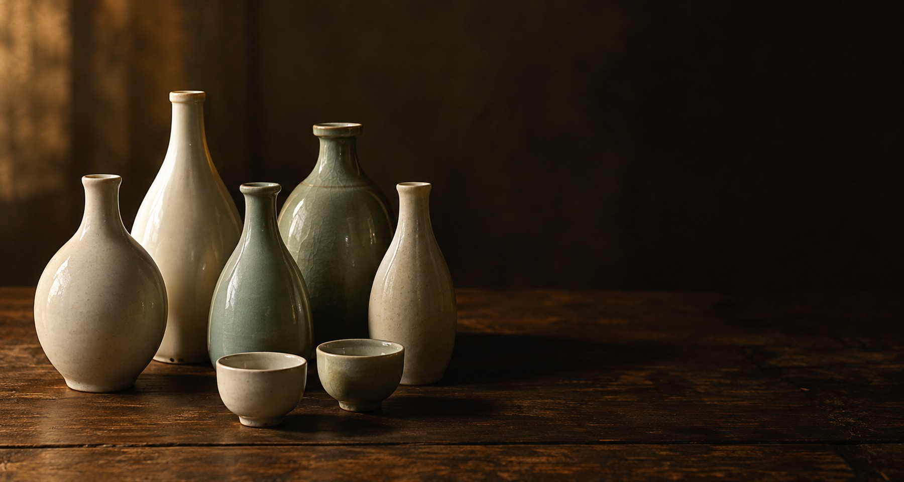

HOME > 백세주마을 > 백세주마을 소개
BEKSEJU VILLAGE
술을 앞에 두고
사람이 모입니다
12가지 한약재와 생쌀발효법으로 빚은 백세주,
그리고 되살린 명품 복원주가 있는 자리입니다.

- 우리술에 대한 사랑은
남다릅니다 - 12가지 한약재와 생쌀발효법으로 빚은 백세주를 비롯해, 우리 조상들이 즐겨 마셨으나 잊혀졌던 명품 복원주까지 있습니다.
- 고귀한 우리술과 그에 어울리는 음식을 한자리에서 만날 수 있는 곳입니다.
한잔의 술에도 의미가 있고
함께 마시고픈 사람이 있습니다
예로부터 우리네 술자리는 따뜻한 사람의 정이 있었고 즐거운 풍류가 있었습니다
되살린 우리술을 한자리에서

- 스물네 가지 우리술
- 국순당이 문헌에서 찾아 되살린 24종의 우리술과 백세주. 이름만 알던 술을 실제로 잔에 따라 마셔볼 수 있는 자리입니다.
백세주마을이 약속드립니다
오래 머물고 싶은 가게가 되기 위해 세 가지를 지킵니다.
-
- 언제나 고객님의
건강을 우선하겠습니다 - 신선한 식자재를 쓰고 철저한 품질관리를 지키겠습니다. MSG 사용을 줄여 건강한 먹거리를 만들어 나가겠습니다.
- 언제나 고객님의
-
- 우리의 좋은 술문화를
만들어 가겠습니다 - 우리술과 음식의 가치와 의미를 설명하겠습니다. 잊혀진 소중한 우리의 술을 복원하여 준비하겠습니다.
- 우리의 좋은 술문화를
-
- 가족과 같은 모습으로
함께 하겠습니다 - 즐거운 우리집과 같이 밝고 흥겨운 마음으로 모시겠습니다. 고객의 소리에 열린 자세로 귀 기울이겠습니다.
- 가족과 같은 모습으로